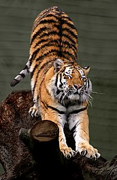

Bengal tigers reach a head-to-body length of 204 cm (80 in) plus a tail of 107 cm (42 in) and a weight of up to 261 kg (575 lb).[22] Several scientists indicated that adult male Bengal tigers in the Terai consistently attain more than 227 kg (500 lb) of body weight. Seven adult males captured in Chitwan National Park in the early 1970s had an average weight of 235 kg (518 lb) ranging from 200 to 261 kg (441 to 575 lb), and that of the females was 140 kg (310 lb) ranging from 116 to 164 kg (256 to 362 lb).[23] Two male tigers captured in Chitwan National Park exceeded weights of 270 kg (600 lb) and are the largest free ranging tigers reported to date.[24]
Three tigresses from the Bangladesh Sundarbans had a mean weight of 76.7 kg (169 lb). The oldest female weighed 75 kg (165 lb) and was in a relatively poor condition at the time of capture. Their skulls and body weights were distinct from those of tigers in other habitats, indicating that they may have adapted to the unique conditions of the mangrove habitat. Their small sizes are probably due to a combination of intense intraspecific competition and small size of prey available to tigers in the Sundarbans, compared to the larger deer and other prey available to tigers in other parts.[25]
The very large "Leeds Tiger" on display at Leeds City Museum, shot in 1860 near Mussoorie, had a body length of 371 cm (12 ft 2 in) at death.[26] Two tigers shot in Kumaon District and near Oude at the end of the 19th century allegedly measured more than 366 cm (12 ft). But at the time, sportsmen had not yet adopted a standard system of measurement; some measured 'between the pegs' while others measured 'over the curves'.[27] The greatest length of a tiger skull measured 413 mm (16.25 in) "over the bone"; this one was shot in the vicinity of Nagina in northern India.[28]
In the beginning of the 20th century, a male tiger was shot in central India with a head and body length of 221 cm (87 in) between pegs, a chest girth of 150 cm (59 in), a shoulder height of 109 cm (43 in) and a tail length of 81 cm (32 in), which was perhaps bitten off by a rival male. This specimen could not be weighed, but it was calculated to weigh no less than 272 kg (600 lb).[29] A male weighing 259 kg (570 lb) was shot in northern India in the 1930s.[28] A male tiger shot in Nepal weighed 320 kg (710 lb) and measured 328 cm (10 ft 9 in) 'over the curves'.[30] The heaviest wild tiger was possibly a huge male killed in 1967 at the foothills of the Himalayas. It weighed 388.7 kg (857 lb) after eating a buffalo calf; it measured 323 cm (127 in) in total length between pegs, and 338 cm (133 in) over curves. Without eating the calf beforehand, it would have likely weighed at least 324.3 kg (715 lb). This specimen is on exhibition in the Mammals Hall of the Smithsonian Institution.[31] In the Central Provinces of India, a male tiger shot weighed 317 kg (699 lb) and measured 3.02 m (9 ft 11 in).[32] Thus, the Bengal tiger rivals the Siberian tiger in average weight.[33] |
 |